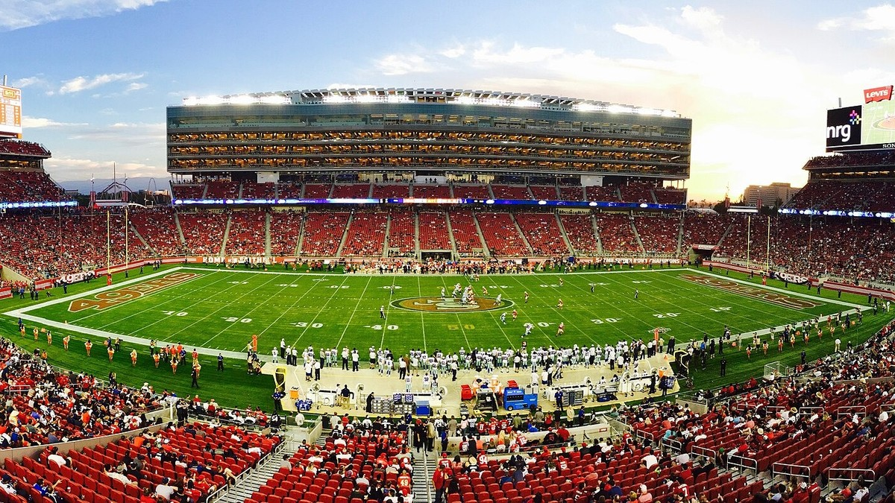

49ers Injury Report
Who is out, who is questionable, and who is on injured reserve, kept current through the season at this one address.

This is the page to check before a 49ers game. Every player on the league injury report is here with his position, the injury, his status and when it last changed. It refreshes several times a day, so you never need a new link for a new week.
The current report
Updated Fri, Nov 13, 6:35 PM Pacific. 2 out or doubtful, 5 questionable, 16 on injured reserve, PUP or another reserve list. Next game: at Dallas Cowboys, Sun, Nov 15, 1:25 PM Pacific.
| Player | Pos | Injury | Status | Expected back | Last update |
|---|---|---|---|---|---|
| Brandon Aiyuk | WR | Personal | Out | About 2 weeks (est. Nov 29) | Mon, Nov 9 |
| Mike Evans | WR | Achilles, tendinitis, right | Out | Est. Nov 22 | Fri, Nov 13 |
| Player | Pos | Injury | Status | Expected back | Last update |
|---|---|---|---|---|---|
| Deommodore Lenoir | CB | Foot | Questionable | Questionable | Fri, Nov 13 |
| Renardo Green | CB | Back | Questionable | Questionable | Fri, Nov 13 |
| Upton Stout | CB | Shoulder | Questionable | Questionable | Wed, Nov 11 |
| Dre Greenlaw | LB | Knee | Questionable | Questionable | Fri, Nov 13 |
| Trent Williams | OT | Shoulder | Questionable | Questionable | Thu, Nov 12 |
| Player | Pos | Injury | Status | Expected back | Last update |
|---|---|---|---|---|---|
| Nate Hobbs | CB | Groin | Injured Reserve (designated to return) | Est. Nov 15 | Sat, Nov 7 |
| Andrew Farmer II | DE | Back | Injured Reserve | Out for the season (est.) | Thu, Jul 30 |
| Mikail Kamara | DE | Knee | Injured Reserve | Out for the season (est.) | Mon, Aug 3 |
| Alfred Collins | DT | Knee, surgery | Injured Reserve | Out for the season (est.) | Thu, Sep 10 |
| C.J. West | DT | Knee | Injured Reserve (designated to return) | Est. Nov 15 | Wed, Nov 11 |
| Gracen Halton | DT | Ankle, surgery, left | Injured Reserve | Out for the season | Tue, Nov 10 |
| Sam Okuayinonu | DT | Foot, surgery | Injured Reserve | About 5 weeks (est. Dec 17) | Mon, Sep 7 |
| Nick Martin | LB | Hamstring | Injured Reserve | Est. Nov 15 | Mon, Oct 12 |
| Austen Pleasants | OT | Knee | Injured Reserve (designated to return) | Est. Nov 15 | Mon, Aug 31 |
| Nick Zakelj | OT | Undisclosed | Injured Reserve | Out for the season (est.) | Mon, Aug 31 |
| Isaac Guerendo | RB | Pectoral, surgery | Out (PUP list) | Est. Nov 15 | Sun, Aug 30 |
| Darrick Forrest | S | Undisclosed | Injured Reserve | Out for the season (est.) | Thu, May 28 |
| Jake Tonges | TE | Knee (MCL), surgery, right | Injured Reserve | Out for the season | Wed, Sep 16 |
| Christian Kirk | WR | Knee (Meniscus) | Injured Reserve | About 3 weeks (est. Dec 6) | Sat, Nov 7 |
| De'Zhaun Stribling | WR | Ankle, surgery, left | Injured Reserve | About 3 weeks (est. Dec 6) | Mon, Nov 2 |
| Ricky Pearsall | WR | Knee (PCL), surgery, right | Injured Reserve | Out for the season | Thu, Aug 13 |
Back off the report in the last 10 days: Brandin Cooks (WR), Brock Purdy (QB), Christian McCaffrey (RB), Deebo Samuel Sr. (WR), Demarcus Robinson (WR), Eddy Pineiro (PK), Enrique Cruz Jr. (OT), Fred Warner (LB), Garret Wallow (LB), George Kittle (TE), Jaden Dugger (LB), Jordan James (RB), Jordan Watkins (WR), Kaelon Black (RB), Keenan Allen (WR), Khalid Kareem (DE), Kurtis Rourke (QB), Luke Gifford (LB), Mac Jones (QB), Marques Sigle (S), Nick Bosa (DE), Siran Neal (S), Tatum Bethune (LB).
Quick answers
Who is out for the 49ers right now?
As of Fri, Nov 13: Mike Evans (out), Brandon Aiyuk (out), Isaac Guerendo (out), C.J. West (injured reserve), Gracen Halton (injured reserve), Nate Hobbs (injured reserve), Christian Kirk (injured reserve), De'Zhaun Stribling (injured reserve) and 10 more.
Who is questionable or day to day for the 49ers?
As of Fri, Nov 13: Renardo Green (questionable), Deommodore Lenoir (questionable), Dre Greenlaw (questionable), Trent Williams (questionable) and Upton Stout (questionable).
When is Mike Evans expected back?
Est. Nov 22. He is listed as out (achilles, tendinitis, right), last updated Fri, Nov 13.
When is C.J. West expected back?
Est. Nov 15. He is listed as injured reserve (knee), last updated Wed, Nov 11.
When is Gracen Halton expected back?
Out for the season. He is listed as injured reserve (ankle, surgery, left), last updated Tue, Nov 10.
When is Brandon Aiyuk expected back?
About 2 weeks (est. Nov 29). He is listed as out (personal), last updated Mon, Nov 9.
How to read it
Out means he will not play in the next game. Doubtful means he is unlikely to. Questionable means it is a genuine maybe, and plenty of questionable players suit up. Injured reserve takes a player off the active roster for at least four games, and PUP is the physically unable to perform list, used for players still recovering from an injury they already had.
Expected back is the latest timeline we can stand behind. When the update names one, like six weeks or two to three weeks, it shows here in plain numbers with the date it was reported. When it does not, you see the estimated return date carried on the league report, marked est. Timelines move, and this page moves with them. If nothing has been reported, it says no timeline yet. Practice participation is not shown: if the feed does not report it, we do not guess at it.
Where the numbers come from
Status, designation and injury come from the league injury report as published through ESPN, read automatically. Nothing in the tables is typed in by hand. When the team announces something the feed has not caught yet, it shows up here on the next refresh, usually within a few hours. See our editorial standards and corrections policy.
Our 49ers injury coverage
- 49ers 5 and 0 Through All the Injuries: Shanahan's Best Job Yet
- 49ers 24, Broncos 14: Dre Greenlaw Gets His Revenge and We're 4 and 0
- No Receivers? No Problem. McCaffrey, Juice and Jordan Watkins Keep This Offense Rolling
- The 49ers Are Signing Matthew Judon, and I Can't Tell if It's Help or a Cry for Help
- Nick Bosa Injury: A Pulled Calf in Practice, and I'm Out of Patience
- 49ers Defensive Line Injuries: Déjà Vu All Over Again, Every Year
For the full roster and who steps in behind each injured starter, see the 49ers roster and depth chart. Results and the rest of the schedule are on the 49ers schedule page.
Every Bay Area injury report
Every Bay Area team · Raiders · Warriors · Giants · A's · Sharks